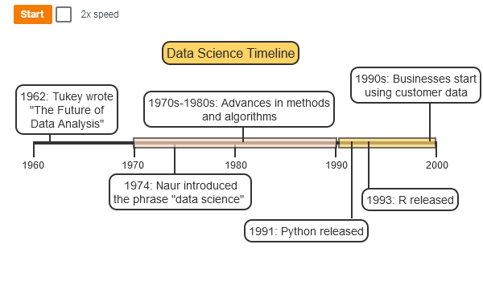
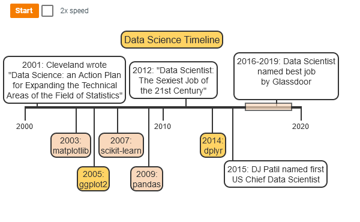
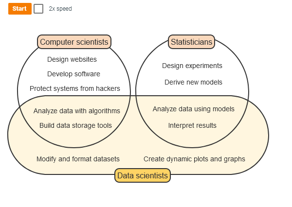
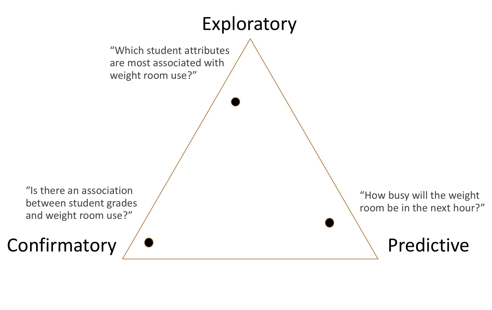
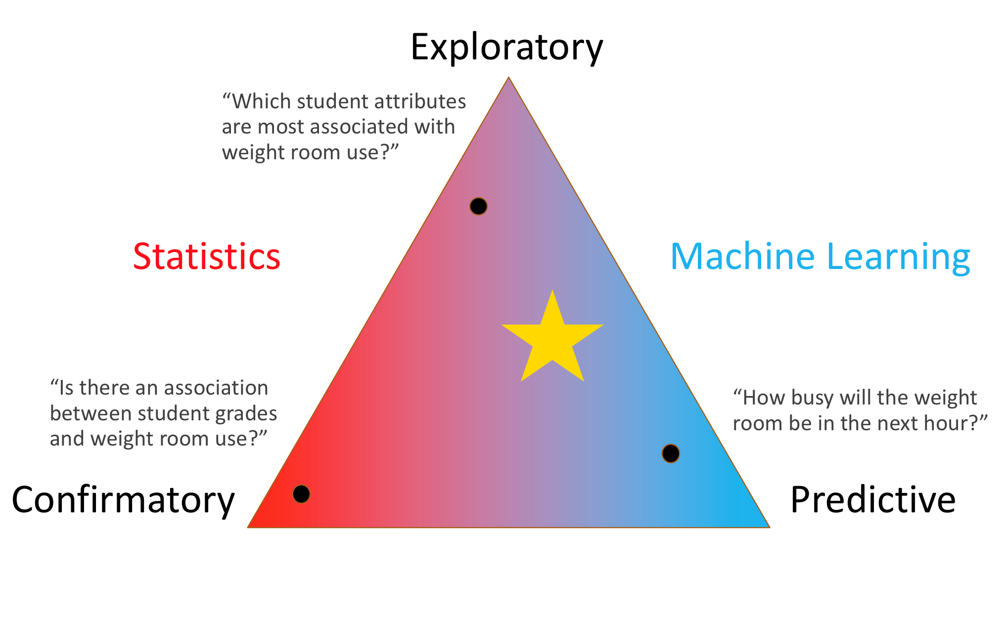
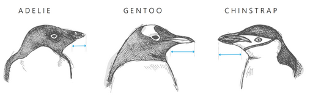
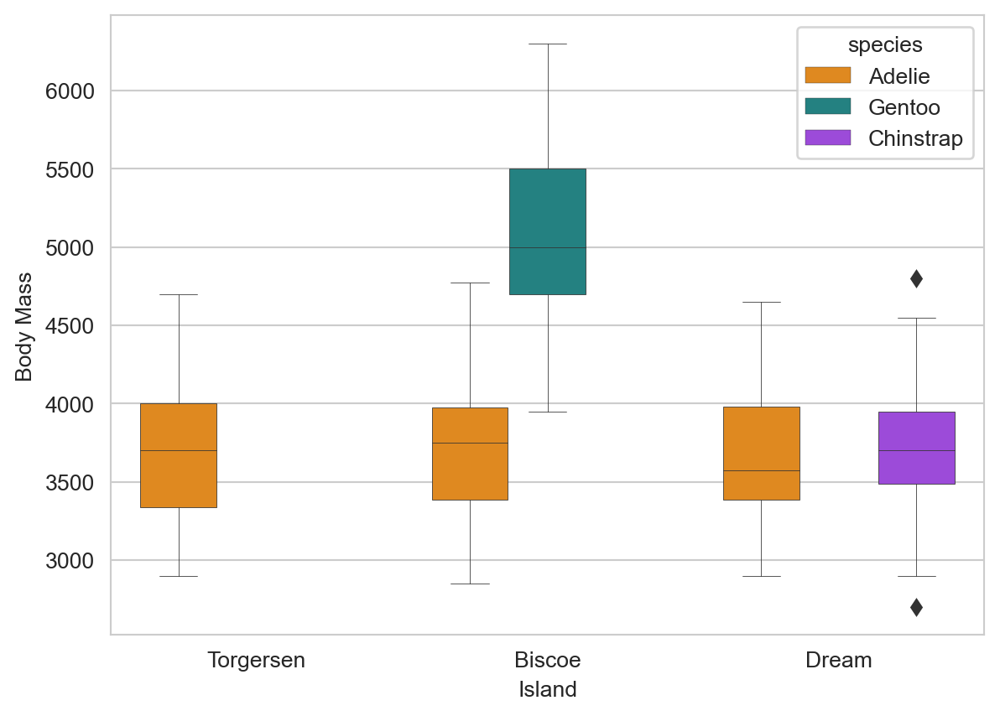
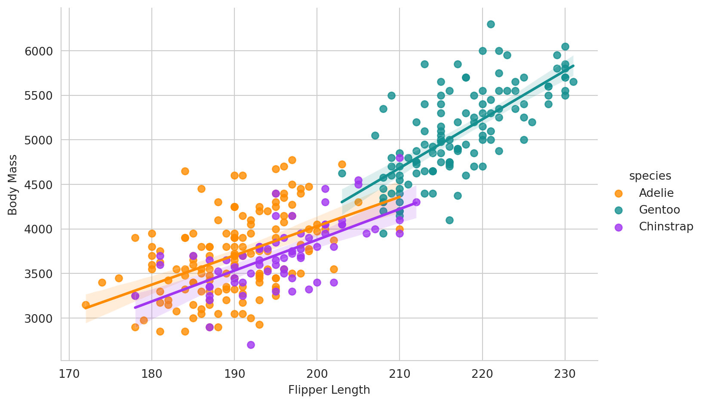

—number title: “CISC482 - Lecture02” subtitle: “What is Data Science?” author: “Dr. Jeremy Castagno” footer: “https://jeremybyu.github.io/intro-ds-website” logo: “../images/logo.png” format: revealjs: theme: slides.scss transition: fade slide-number: true show-slide-number: all chalkboard: true editor: visual execute: freeze: auto
Class Business
Subscibre to Zybook
Brightspace integration seems to be working now
Due Dates
Reading 1-1: Jan 22, Sunday
HW1: Jan 25 @ Midnight, Wed
Reading 2-1: Jan 25 @ 12PM, Wed
Reading 2-2: Jan 27 @ 12PM, Friday
HW2: Feb 1 @ Midnight, Wed
Historical Overview
Data Science
Data science is an interdisciplinary field focused on discoveringpatterns and describingrelationships using data.
Data science uses techniques from computer science and statistics.
Data scientists use computers to write code and store, modify, and visualize large datasets.
Data scientists also build, test, and interpret models that describe real-life situations, then use models to make predictions for new data.
DS early history

Peter Naur won the Turing Award
Astronomer -> Computer Science -> Professor
Inventor of Algol Programming Language (PL)
DS 20th Century

Statistics and Computer Science

Focus of Task

Statistics and Machine Learning
Where are we?

Equal Exploratory and Predictive
Little bit of statistics
Foundations of Data Science
Learning Goals
Identify features and instances in a dataset
Three V’s- volume, velocity, and variety
Data sets
A dataset is a collection of information. Consists of features and instances
A feature, or variable, is a characteristic that can be measured or observed on an observational unit.
An instance, or observational units, is a tuple of features. Often called data points or observations.
Example Data Set
penguins = load_penguins()penguins.head()
species
island
bill_length_mm
bill_depth_mm
flipper_length_mm
body_mass_g
sex
year
0
Adelie
Torgersen
39.1
18.7
181.0
3750.0
male
2007
1
Adelie
Torgersen
39.5
17.4
186.0
3800.0
female
2007
2
Adelie
Torgersen
40.3
18.0
195.0
3250.0
female
2007
3
Adelie
Torgersen
NaN
NaN
NaN
NaN
NaN
2007
4
Adelie
Torgersen
36.7
19.3
193.0
3450.0
female
2007
ROW is an instance.
COLUMN represents a different feature.
Researchers at the Palmer Archipelago in the Antarctic collected data on three local penguin species: Adelie, Chinstrap, and Gentoo.
Volume, Variety, Velocity
Volume - The amount of data being collected digitally is exponentially increasing.
Billions of people are being digitally indexed and catalogued
Estimate that 2.5 quintillion bytes of data is created each day
We now have the processing power where large data sets can now be processed
Big data is really, really big. In 1986, the total estimated data in the world was 2.6 exabytes (EB).
One exabyte (EB) equals bytes, or 1 million TB. Most laptops come with 1 TB storage at most.
By 1993, the total estimated data in the world had grown to 15.8 EB.
In 2000, the total estimated data in the world had reached 54.5 EB.
In 2007, the total estimated data in the world was 295 EB.
By 2020, the total estimated data had increased to 6800 EB, or 6.8 PB - the equivalent of over 7 trillion laptop computers.
Volume, Variety, Velocity
Variety - Data from a variety of difference sources are being collected and combined
Its not just your name and your playlist.
Its how long you listened
How long it took you swipe next
Your search history on the subject
Your bloody e-mails
Your phones resolution, battery information, browser, time zone
Volume, Variety, Velocity
Velocity - Data is being created and ingested at a faster time
The search you just made was fed into an algorithm to give you an add within 10 seconds
Sensor Data - Your recorded heart rate was just noted and used to indicate the statistical likelihood of sending you an add now or later
With more up to date information, data scientist can make better predictions
Reproducibility
Two data scientists are building models to classify brain tumors as benign or malignant.
One data scientist uses a programming language, such as Python, to write code to fit the model.
Another data scientist uses software instead of coding to fit the model.
New brain scans arrive. The data scientist who used coding re-runs the analysis -> a few minutes.
Since the software uses a point and click interface, re-analyzing could take several hours.
Data Science as Career
Job Titles
Title
Description
Data engineers
Data engineers specialize in data gathering and storage for production. Data engineers extract, transform, and load datasets for later analysis.
Data scientists
Data scientists gather data, transform data, and use models and algorithms to extract meaningful insights from datasets. Development
Data analysts
Data analysts work with industry experts to analyze datasets and create visualizations. Data analysts use some data science models, but tend to use data visualization and summary more than modeling.
Business intelligence analysts
Business intelligence analysts specialize in data related to financial and market transactions. Data analysts and business intelligence analysts are similar roles, but the term business intelligence is more common in business and finance.
Machine learning engineers
Machine learning engineers specialize in machine learning models instead of statistical models. Machine learning engineers often focus on the implementation and development of a model rather than selection and interpretation. Production
5 Steps of Data Science
Your new life
Step
Description
Step 1: Gathering data
Identify available and relevant data; gather new data if needed.
Step 2: Cleaning data
Reformat datasets, create new features, and address missing values.
Step 3: Exploring data
Create data visualizations and calculate summary statistics to explore potential relationships in the dataset.
Step 4: Modeling data
Use modeling skills and content knowledge to fit and evaluate models, measure relationships, and make predictions.
Step 5: Interpreting data
Describe and interpret conclusions from data through written reports and presentations.
The Palmer penguins dataset by Allison Horst, Alison Hill, and Kristen Gorman
The Researchers
Cleaning Data - Before
df_raw = load_penguins_raw()df_raw.head()
studyName
Sample Number
Species
Region
Island
Stage
Individual ID
Clutch Completion
Date Egg
Culmen Length (mm)
Culmen Depth (mm)
Flipper Length (mm)
Body Mass (g)
Sex
Delta 15 N (o/oo)
Delta 13 C (o/oo)
Comments
0
PAL0708
1
Adelie Penguin (Pygoscelis adeliae)
Anvers
Torgersen
Adult, 1 Egg Stage
N1A1
Yes
2007-11-11
39.1
18.7
181.0
3750.0
MALE
NaN
NaN
Not enough blood for isotopes.
1
PAL0708
2
Adelie Penguin (Pygoscelis adeliae)
Anvers
Torgersen
Adult, 1 Egg Stage
N1A2
Yes
2007-11-11
39.5
17.4
186.0
3800.0
FEMALE
8.94956
-24.69454
NaN
2
PAL0708
3
Adelie Penguin (Pygoscelis adeliae)
Anvers
Torgersen
Adult, 1 Egg Stage
N2A1
Yes
2007-11-16
40.3
18.0
195.0
3250.0
FEMALE
8.36821
-25.33302
NaN
3
PAL0708
4
Adelie Penguin (Pygoscelis adeliae)
Anvers
Torgersen
Adult, 1 Egg Stage
N2A2
Yes
2007-11-16
NaN
NaN
NaN
NaN
NaN
NaN
NaN
Adult not sampled.
4
PAL0708
5
Adelie Penguin (Pygoscelis adeliae)
Anvers
Torgersen
Adult, 1 Egg Stage
N3A1
Yes
2007-11-16
36.7
19.3
193.0
3450.0
FEMALE
8.76651
-25.32426
NaN
Important Features

Cleaning Data - After
df = load_penguins()df.head()
species
island
bill_length_mm
bill_depth_mm
flipper_length_mm
body_mass_g
sex
year
0
Adelie
Torgersen
39.1
18.7
181.0
3750.0
male
2007
1
Adelie
Torgersen
39.5
17.4
186.0
3800.0
female
2007
2
Adelie
Torgersen
40.3
18.0
195.0
3250.0
female
2007
3
Adelie
Torgersen
NaN
NaN
NaN
NaN
NaN
2007
4
Adelie
Torgersen
36.7
19.3
193.0
3450.0
female
2007
Exploring Data
g = sns.boxplot(x ='island', y ='body_mass_g', hue ='species', data = penguins, palette=['#FF8C00','#159090','#A034F0'], linewidth=0.3)g.set_xlabel('Island')g.set_ylabel('Body Mass');

Modelling Data
g = sns.lmplot(x="flipper_length_mm", y="body_mass_g", hue="species", data=penguins, palette=['#FF8C00','#159090','#A034F0'], aspect=1.5)g.set_xlabels('Flipper Length')g.set_ylabels('Body Mass');

Interpreting Data
There is a linear relationship between flipper length and body length
Gentoo penguins have significantly higher body length and body mass then Adelie or Chinstrap.
etc.
Conclusion
Big Takeaways
What is data science relationship with Statistics? Computer Science?